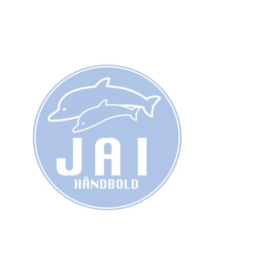

<div>
  <mat-toolbar style="background-color: lightblue; color:white">
    <a routerLink="/home">
      
    </a>
    <span>JAI Håndbold</span>

    <button mat-icon-button [mat-menu-trigger-for]="menu">
      <mat-icon>more_vert</mat-icon>
    </button>
  </mat-toolbar>
  <mat-menu x-position="before" #menu="matMenu">
    <a *ngFor="let item of items" [routerLink]="item.url" routerLinkActive="router-link-active">
      <button mat-menu-item>{{item.title}}</button>
    </a>
  </mat-menu>
</div>